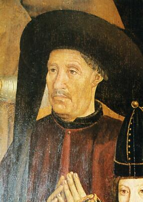

Enrico il Navigatore
Il principe che diede inizio all'era delle scoperte portoghesi

1394 - 1460 | Infante del Portogallo, pioniere delle esplorazioni oceaniche
I Numeri dell'Impresa
Le Fasi dell'Esplorazione
⚔️ La Conquista di Ceuta
Enrico partecipò alla conquista di Ceuta, una città fortificata in Nord Africa. Fu la prima impresa militare overseas del Portogallo e segnò l'inizio dell'espansione portoghese.
Perché Ceuta era importante?
- Posizione strategica: controllava l'ingresso al Mediterraneo dallo Stretto di Gibilterra
- Ricchezza commerciale: era un importante centro di scambio di spezie e oro
- Crociato: Enrico ricevette il titolo di cavaliere dopo la conquista
Impatto: Ceuta aprì gli occhi di Enrico sulla ricchezza dell'Africa e lo motivò a sponsorizzare esplorazioni più a sud.
🗺️ Le Prime Scoperte: Madeira e Azzorre
Grazie al patrocinio di Enrico, i navigatori portoghesi scoprirono Madeira (1419) e le Azzorre (1427). Questi arcipelaghi diventarono basi fondamentali per le spedizioni future.
Cosa scoprirono in queste isole?
- Madeira: Isola fertile, ideale per coltivare zucchero e vite
- Azzorre: Arcipelago strategico nell'Atlantico, base per rotte verso ovest
- Colonizzazione: Portoghesi insediarono coloni nelle isole
Scuola di Sagres: Enrico riunì a Sagres cartografi, astronomi e costruttori navali per perfezionare le tecniche di navigazione.
🌊 Oltre il Capo Bojador: L'Africa si Apre
Nel 1434, il capitano Gil Eanes superò il temuto Capo Bojador, rompendo il mito che oltre quel punto ci fosse la morte certa. Da lì, le esplorazioni proseguirono lungo le coste africane fino alla Sierra Leone.
Perché Capo Bojador era così temuto?
- Leggende: si credeva che oltre il capo ci fossero "mostri marini" e "acque bollenti"
- Correnti: forti correnti e venti contrari rendevano difficile il ritorno
- Sabbia: la costa era desolata e priva di punti di riferimento
Risultati: Dopo Bojador, Enrico sponsorizzò spedizioni che raggiunsero il Senegal, Capo Verde e la Sierra Leone, aprendo rotte commerciali per oro, avorio e schiavi.
🗺️ Le Rotte Esplorate

Come furono possibili queste esplorazioni?
Enrico il Navigatore non navigò mai personalmente, ma fu un instancabile patrocinatore. Riunì i migliori cartografi, astronomi e costruttori navali a Sagres, creando una vera e propria "scuola di navigazione". Sviluppò la caravella, una nave agile e veloce, e promosse l'uso dell'astrolabio e della bussola.
Curiosità
- Non navigò mai personalmente: il suo soprannome "il Navigatore" fu dato dopo la sua morte
- La caravella, da lui sviluppata, poteva navigare anche controvento grazie alle vele latine
- La "Scuola di Sagres" non era una scuola formale, ma un centro di raccolta di conoscenze
Gil Eanes: Il capitano che nel 1434 superò il temuto Capo Bojador.
Gonçalo Velho Cabral: Scopritore delle isole Azzorre (1427) e di Madeira.
Nuno Tristão: Esploratore che raggiunse la Guinea e il Senegal.
L'opera di Enrico il Navigatore pose le basi per l'espansione portoghese: Bartolomeo Diaz raggiunse il Capo di Buona Speranza (1488) e Vasco da Gama arrivò in India (1498), entrambi grazie alle rotte e alle conoscenze sviluppate sotto il patrocinio di Enrico.
📖 Ripassa Prima del Quiz!
Leggi attentamente queste informazioni e prova a rispondere alle domande
👤 Chi era Enrico il Navigatore?
📍 Domanda 1: Quando e dove nacque?
Risposta: Enrico nacque il 4 marzo 1394 a Porto, in Portogallo.
📍 Domanda 2: Chi erano i suoi genitori?
Risposta: Era il terzo figlio di Re Giovanni I del Portogallo e di Filippa di Lancaster.
📍 Domanda 3: Perché si chiamava "il Navigatore"?
Risposta: Il soprannome gli fu dato dopo la sua morte, perché sponsorizzò molte spedizioni, anche se non navigò mai personalmente.
📍 Domanda 4: Quando e dove morì?
Risposta: Morì il 13 novembre 1460 a Sagres.
⚔️ La Conquista di Ceuta
📍 Domanda 5: Cos'è Ceuta?
Risposta: Una città fortificata in Nord Africa all'ingresso dello Stretto di Gibilterra.
📍 Domanda 6: Quando fu conquistata?
Risposta: Nel 1415.
📍 Domanda 7: Che impatto ebbe su Enrico?
Risposta: Vide le ricchezze africane e decise di sponsorizzare esplorazioni più a sud.
🌊 Il Superamento di Capo Bojador
📍 Domanda 8: Chi superò Capo Bojador e quando?
Risposta: Gil Eanes nel 1434.
📍 Domanda 9: Perché era così temuto?
Risposta: Leggende di mostri marini, correnti pericolose, costa desolata.
📍 Domanda 10: Cosa successe dopo?
Risposta: I portoghesi raggiunsero Senegal, Capo Verde e Sierra Leone.
📚 Fonti Consultate
- Treccani - Enciclopedia Italiana
- Geopop - Approfondimenti
- Focus Junior - Spiegazioni per ragazzi
- Libro di storia - Contesto storico